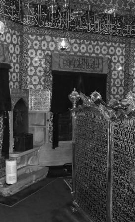

Aradan tam 806 sene geçti. Fatih Sultan Mehmet’in kumandasındaki Osmanlı ordusu, Şarkî Roma İmparatorluğunun merkezi olan Konstantaniye’yi muhasara etmişti.
Haliç aynı zamanda, Türklerin Konstantaniye surları karşısında kazanmış oldukları muazzam zaferin en mühim safhasına da bir kahramanlık sahası teşkil etmişti. Meşhur Güstav Şalümberje’nin, İstanbul’un muhasarası ve zaptı eserinde yana yakıla izah ve itiraf ettiğine göre:
Büyük Fatih, İstanbul’un muhasarasına başladığı zaman, o devre göre kuvvetli sayılacak bir donanmaya da malikti.
Bu donanma, İstanbul surlarının karşısına gelince, Bizanslılarda büyük bir korku ve heyecan belirdi. Çünkü o zamana kadar, Bizans’a sahip olmak için gelenler yalnız surların kara cihetini nazarı dikkate almışlar, donanma getirmeğe lüzum görmemişlerdi.
Tarihte görülen bu ilk büyük Türk donanması, nakliye ve sair gayri muharip gemilerden başka kadırgalar, fostlar, parandi ve birik sınıflarına mensup yüz kırk beş gemiden mürekkepti.
Büyük Fatih, donanmasının, Boğaziçi’nde Çifte sütun’da demirlemesini emretti. Burası, Türk deniz kuvvetlerinin üssünü teşkil edecek, vaziyetin icabına göre harekete devam edilecekti.
Bizanslılar, her harp tehlikesinde olduğu gibi bu defada o meşhur zincirlerini, yine Haliç’in ağzına germişlerdi. Haliç Konstantaniye şehri azminin ruhu mesabesinde (derecesinde) idi. Bu zincir gerili olduğu takdirde, hiçbir kuvvet, Haliç’e giremeyecekti.
Bizanslılar, bütün kendi gemileriyle İstanbul’da bulunan Rum ve İtalyan gemilerini de zincirin gerisine çekmişler, bunların toplarını da zinciri zorlayacağı muhakkak olan Türk donanmasının gelebilecekleri yerlere çevirmişlerdi.
Bu zincir, dövme demirden, iri baklalardan mürekkepti. Bir ucu, şimdi Sarayburnu dediğimiz yerin yakınlarında bulunan Sent Öjen burcuna diğer ucu da, yine bugün Galata’da Mumhane dediğimiz yer civarındaki Lakrova dö Galata dedikleri burca raptedilmiştir (tutturulmuştur).
Bu zincirin kırılması ve koparılması, hakikaten mümkün değildi çünkü en kuvvetli demir baklalardan teşekkül etmiş olan zincir, yuvarlak ağaç kütükleri üzerine yerleştirilmiş bu surette o ağır demir kütlesinin denize batmasına da imkân verilmemişti.
Bu zincir hakikaten başlı başına müthiş bir müdafaa kuvveti idi. Aynı zamanda, beşi Ceneviz, üçü Girit, biri Ankon ve diğerleri de Bizans harp gemilerinden mürekkep olan bir donanma da bu zincirin arkasına dizilmişti. Bunları da, Türk gemileri zinciri zorlamaya başladığı zaman, top ateşleriyle müdafaaya yardım edeceklerdi.
Bizanslılar, bu zincire o derece güveniyorlardı ki, artık Türklerin hiçbir zaman Haliç’e giremiyeceklerine tamamıyla kanaat getirmişlerdi.
Fakat Büyük Fatih’in azim ve iradesi, kısa bir müddet sonra, bu kanaati alt üst etti.
Büyük Fatih, evvela bu zinciri kırarak cebri bir hücumla Haliç’e girmeye teşebbüs etti. Lâkin bundaki müşkülatı görür görmez, derhal harp plânını değiştirdi. Ve o güne kadar dünya tarihinde eşine ve emsaline tesadüf edilmemiş olan harikulâde bir hücum plânının tatbikine karar verdi.
Bu plan, cidden harikulâde ve hemen hemen masal gibi bir şeydi. Büyük Fatih, beyhude yere o kuvvetli zinciri zorlamakla vakit geçirmektense, gemilerini karadan yürüterek Galata kulesinin arkasından Haliç’e geçirmeyi tasavvur etmişti.
Bizanslılar, böyle muhal (imkânsız) olan bir hayali zihinlerinden geçirmedikleri için, daha halâ Haliç’in ağzına gerilmiş olan zincire güvenmektelerdi. Fakat Büyük Fatih, derhal kararını vermiş, tasavvurunun tatbikine geçmişti.
Muhasara ordusunun kumandanlarından Zağnos Paşa, büyük kara ordusunun ihtiyatını teşkil etmekte idi. Zağnos Paşa, Büyük Fatih’ten aldığı emir üzerine düşmana hissettirmeden, bugün Dolmabahçe dediğimiz yerden, evvelce Harbiye Mektebi’nin bulunduğu binanın arkasına ve oradan Kasımpaşa civarına kadar olan sahayı askerlerine tesviye ettirdi.
Galata’nın arkasındaki ormanlardan, düzgün ağaçlar kestirdi. Galata’daki Cenevizlerden tulumlar dolusu zeytinyağı tedarik etti. Bir gece, kesilen ağaçlar tesviye edilen yola dizildi. Üzerlerine zeytinyağları dökülerek kaygan bir hale getirildi.
Bizanslıları şaşırtmak için, kara surlarının her tarafından şiddetli bombardıman başladı. Bu bombardımanın devam ettiği gece, küçük harp gemilerinden mürekkep olan yetmiş iki parça gemi, kısmen Zağnos Paşa’nın askerleri ve kısmen de mandalar tarafından çekilerek o yağlı kızaklar üzerinden Harbiye Mektebinin bulunduğu tepeye çıkarıldı. Oradan da, büyük bir maharetle, Kasımpaşa civarından Haliç’e kaydırıldı.
Bizanslılar, Türk gemilerini Haliç’te görür görmez fena halde şaşırdılar. O zamana kadar zincir hattının gerisinde müdafaaya hazırlanmış olan bütün düşman gemileri, derhal demirlerini kaldırdılar. Büyük bir hiddet ve tehevvürle (öfkeyle), Türk gemilerinin üzerine atıldılar.
Harp başladı. Ve yine Şulüm Berjen’in ifadesine nazaran, çarçabuk kanlı bir facia halini aldı. Düşmanın birçok toplarla müsellah (silahlandırılmış) olan büyük gemileri, karşılarındaki küçük gemilerden mürekkep hafif filoyu, derhal mağlup edeceklerini sanmışlardı. Fakat Türkler, ezeli ve ebedi olan kahramanlıklarını burada da ispat etmişler, düşman gemilerini batırmışlar, büyük bir zafer kazanmışlardı. Böylece Haliç’in tarihine, altın harflerle yazılacak bir sayfa kazandırmışlardı.
